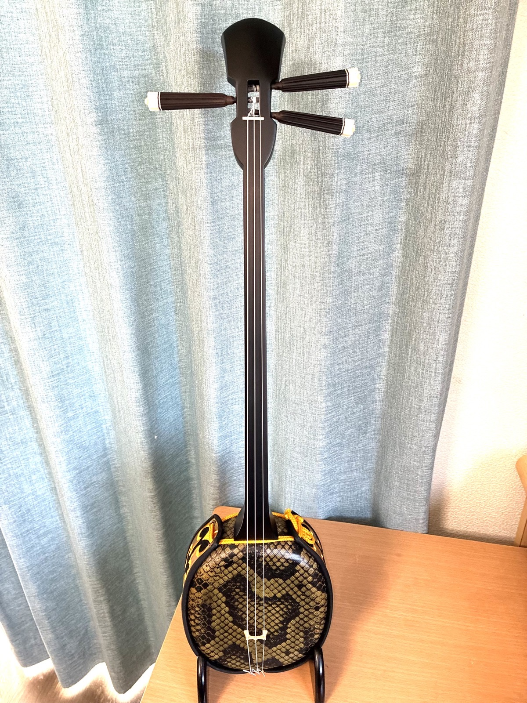
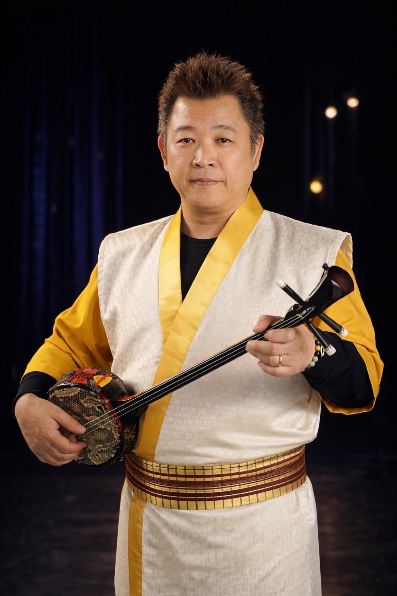
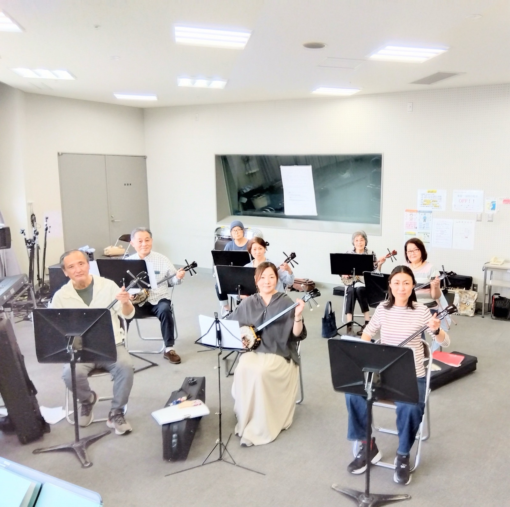
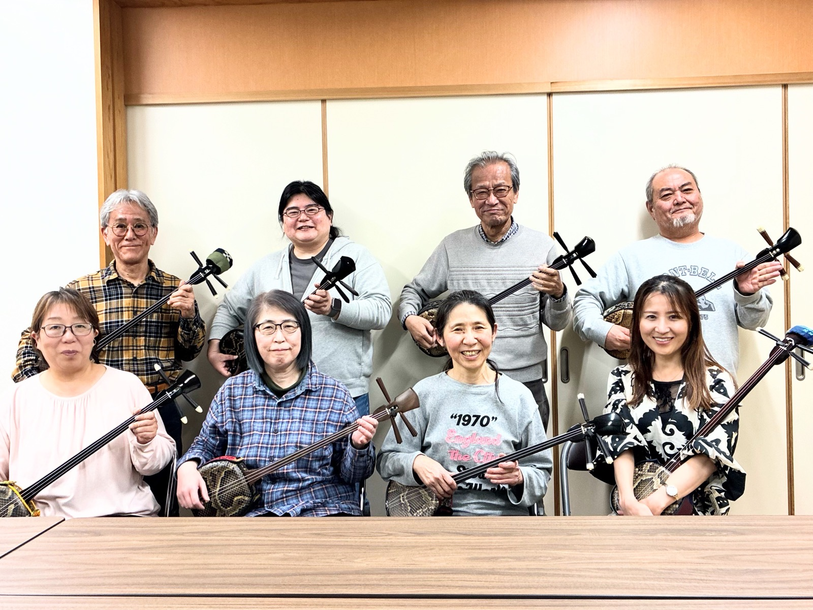

楽譜が読めなくても、大丈夫。美ら三線サークルは、沖縄の唄と三線を、春日市でいちばん気軽に始められる教室です。ゆったりとした島の音色に身をゆだねて、はじめの一音から、ていねいに。
「私にできるかな」を、
「楽しい」に変える場所。
三線の楽譜「工工四（くんくんしー）」は、実は漢字と数字で音を追えるやさしい仕組み。五線譜が読めなくても心配いりません。先生の唄と手元を見ながら、耳と指でゆっくり覚えていく——それが沖縄に伝わる三線の学び方です。年齢も経験も問いません。まずは一音、島の風のような音色を、一緒に鳴らしてみましょう。
三線の譜面「工工四」は数字で音が追える仕組み。五線譜の知識はいりません。先生の唄と手元を見ながら、耳と指で自然に覚えていけます。
まったく初めての方はもちろん、昔ならっていて「もう一度弾きたい」という経験者の再スタートも大歓迎。それぞれのペースを大切にします。
「安里屋ユンタ」などの親しみやすい民謡から、「かぎやで風」などの舞踊曲まで。唄って弾く、沖縄音楽の楽しさを幅広く味わえます。

三線の魅力は、上手に弾くことよりも、唄い、奏でる時間そのものにあります。ゆったりとした音色に合わせて口ずさむうちに、肩の力がふっと抜けていく。そんなひとときを、ここ春日市でお届けしたいと思っています。
ひとりで練習するのは心細くても、仲間と一緒なら続けられる。同じ趣味でつながる、あたたかい輪が、あなたを待っています。
はじめの一歩から、舞踊曲まで。あなたに合わせて。
三線の構え方、調弦（ちんだみ）、工工四の読み方から、ていねいに。まったく初めての方が、無理なく一曲を弾けるようになるまで寄り添います。
初心者歓迎「安里屋ユンタ」「てぃんさぐぬ花」など、親しみやすい沖縄民謡を唄三線で。弾きながら唄う、沖縄音楽ならではの楽しさを味わえます。
唄三線「かぎやで風」など、琉球舞踊の地方（じかた）としても弾ける曲へ。経験者の再スタートや、次のステップを目指す方にもおすすめです。
経験者・再開の方※コース名・内容はデザイン案の一例です。実際のレッスン・曜日・費用に差し替えてお納めします。
沖縄の音楽や文化に、ふれてみたい
楽譜が読めないけれど、楽器を始めてみたい
昔ならった三線を、もう一度弾きたい
唄いながら弾けるようになりたい
定年後や子育ての合間に、新しい趣味がほしい
同じ趣味の仲間と、楽しくつながりたい
年齢も経験も、関係ありません。島の音色を楽しむ気持ちがあれば、それで十分です。

沖縄の唄と三線に魅せられて、その温かさを一人でも多くの方に伝えたい——そんな想いでこの教室を続けています。大切にしているのは、上手・下手よりも「弾いていて楽しい」という気持ち。楽譜が読めない方も、久しぶりに三線に触れる方も、どうぞ安心していらしてください。まずは見学・体験で、島の音色を一緒に鳴らしてみましょう。
実際のレッスンと、仲間たちの写真です。


三線の音色にのせて、沖縄のゆったりとした時間を、春日の毎日に。
美ら三線サークルのほかにも、福岡と熊本で三線教室・サークルを開いています。
お住まいやご都合に合わせて、通いやすい教室をお選びいただけます。
オンラインの個人レッスンもございます。初心者・経験者どなたでも大歓迎です。
三線をお持ちでない方もご相談ください。
仲間と一緒に、月2回のペースで楽しむ集まりです。月謝4,000円。このページの「美ら三線サークル」もこのグループです。
より本格的に習いたい方向けの教室です。月謝5,000円〜7,000円。初心者の方も、経験者の再スタートも歓迎しています。
遠方の方・お近くに教室がない方へ。ご自宅から、お一人ずつの個人レッスン。お時間はご相談のうえ決めさせていただきます。
美ら三線サークルでは、2026年度の新しい仲間を募集しています。初めての方も、久しぶりの方も、まずは気軽な見学・体験から。楽器の貸し出しなど、ご不安な点もお気軽にご相談ください。
まずは見学・体験から。下のフォームにご記入いただくと、
教室あてにメールで届きます。お気軽にどうぞ。
フォームがうまく動かない場合は、こちらからメールで直接お問い合わせいただけます。
🔒 入力いただいた内容は、教室あてに直接メールで届きます。ホームページ本体とは別に管理されるため、サイトを更新しても情報が消えることはありません。